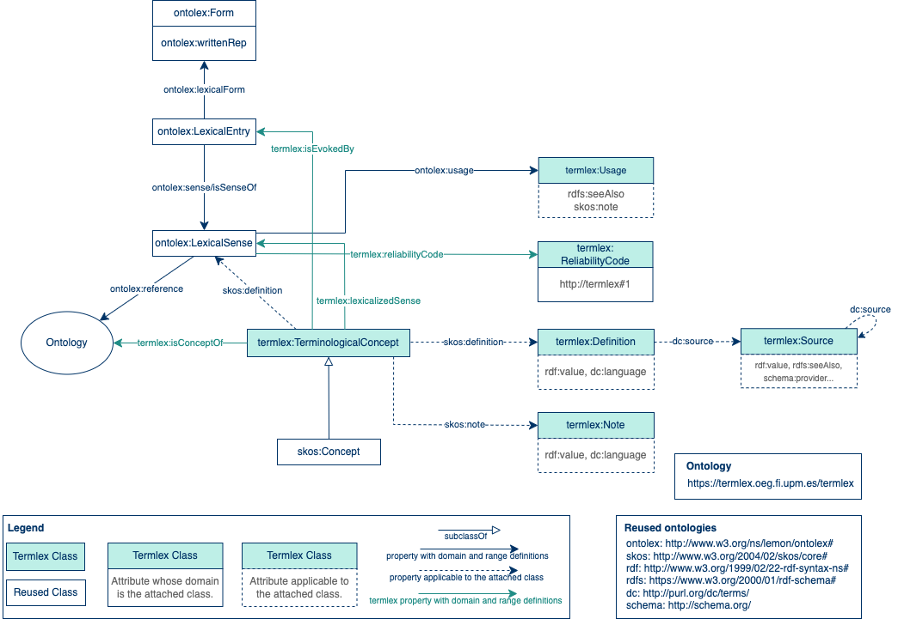

Termlex Proposal for Terminologies
- Latest version:
- https://termlex.oeg.fi.upm.es/termlex
- Authors:
- Patricia Martín-Chozas✉
- Contributors:
- Elena Montiel-Ponsoda
- Patricia Martín-Chozas
- Thierry Declerck
- Víctor Rodríguez-Doncel
- Imported Ontologies:
- core
- ontolex
- Download serialization:


- License:

- Cite as:
- Termlex Proposal for Terminologies.
Introduction back to ToC
Termlex proposal is devised as an extension of the Ontolex model that aims at covering the representation needs of terminological resources to be published as Linguistic Linked Data.Namespace declarations
| [Ontology NS Prefix] | <https://termlex.oeg.fi.upm.es/termlex> |
| cc | <http://creativecommons.org/ns> |
| grddl | <http://www.w3.org/2003/g/data-view> |
| owl | <http://www.w3.org/2002/07/owl> |
| rdf | <http://www.w3.org/1999/02/22-rdf-syntax-ns> |
| xml | <http://www.w3.org/XML/1998/namespace> |
| xsd | <http://www.w3.org/2001/XMLSchema> |
| skos | <http://www.w3.org/2004/02/skos/core> |
| dcterms | <http://purl.org/dc/terms> |
| rdfs | <http://www.w3.org/2000/01/rdf-schema> |
| ontolex | <http://www.w3.org/ns/lemon/ontolex> |
| dc | <http://purl.org/dc/elements/1.1> |
Termlex Proposal for Terminologies: Overview back to ToC
This ontology has the following classes and properties.Classes
Object Properties
- concept
- evokes
- is concept of
- is evoked by
- is lexicalized sense of
- lexicalized sense
- Reliability Code
Named Individuals
Termlex Proposal for Terminologies: Description back to ToC
The Termlex Core diagram shows the classes and properties contained in this proposal. Boxes represent classes and arrows represent properties. In this modelling approach, each term is represented by a TerminologicalConcept, which is the main component of the model. In the left part of the figure, the OntoLex core diagram is shown (lines coloured in black). In the right part, the proposed Termlex elements are exposed (lines coloured in green). Note that in this proposal we follow the recommendation of the methodologies to reuse, whenever possible, the existing models to represent linguistic data: Lexinfo, OntoLex-lemon, Lexicog Module, amongst others. This proposal is intended to cover existing gaps and to avoid redundancy at the same time, and does not intend to be restrictive but complementary.
Cross-reference for Termlex Proposal for Terminologies classes, object properties and data properties back to ToC
This section provides details for each class and property defined by Termlex Proposal for Terminologies.Classes
Definitionc back to ToC or Class ToC
IRI: https://termlex.oeg.fi.upm.es/termlex#Definition
- has super-classes
- thing c
Notec back to ToC or Class ToC
IRI: https://termlex.oeg.fi.upm.es/termlex#Note
- has super-classes
- thing c
Reliability Codec back to ToC or Class ToC
IRI: https://termlex.oeg.fi.upm.es/termlex#ReliabilityCode
Sourcec back to ToC or Class ToC
IRI: https://termlex.oeg.fi.upm.es/termlex#Source
- has super-classes
- thing c
Terminological Conceptc back to ToC or Class ToC
IRI: https://termlex.oeg.fi.upm.es/termlex#TerminologicalConcept
- has super-classes
- concept, thing c
- is in domain of
- is concept of op, is evoked by op, lexicalized sense op
- is in range of
- concept op, evokes op, is lexicalized sense of op
Object Properties
- concept
- evokes
- is concept of
- is evoked by
- is lexicalized sense of
- lexicalized sense
- Reliability Code
conceptop back to ToC or Object Property ToC
IRI: https://termlex.oeg.fi.upm.es/termlex#concept
- has range
- Terminological Concept c
- is inverse of
- is concept of op
evokesop back to ToC or Object Property ToC
IRI: https://termlex.oeg.fi.upm.es/termlex#evokes
- has domain
- lexical entry
- has range
- Terminological Concept c
- is inverse of
- is evoked by op
is concept ofop back to ToC or Object Property ToC
IRI: https://termlex.oeg.fi.upm.es/termlex#isConceptOf
- has domain
- Terminological Concept c
- is inverse of
- concept op
is evoked byop back to ToC or Object Property ToC
IRI: https://termlex.oeg.fi.upm.es/termlex#isEvokedBy
- has domain
- Terminological Concept c
- has range
- lexical entry
- is inverse of
- evokes op
is lexicalized sense ofop back to ToC or Object Property ToC
IRI: https://termlex.oeg.fi.upm.es/termlex#isLexicalizedSenseOf
- has domain
- lexical sense
- has range
- Terminological Concept c
- is inverse of
- lexicalized sense op
lexicalized senseop back to ToC or Object Property ToC
IRI: https://termlex.oeg.fi.upm.es/termlex#lexicalizedSense
- has domain
- Terminological Concept c
- has range
- lexical sense
- is inverse of
- is lexicalized sense of op
Reliability Codeop back to ToC or Object Property ToC
IRI: https://termlex.oeg.fi.upm.es/termlex#reliabilityCode
- has range
- Reliability Code c
Named Individuals
1ni back to ToC or Named Individual ToC
IRI: https://termlex.oeg.fi.upm.es/termlex#1
- belongs to
- Reliability Code c
2ni back to ToC or Named Individual ToC
IRI: https://termlex.oeg.fi.upm.es/termlex#2
- belongs to
- Reliability Code c
3ni back to ToC or Named Individual ToC
IRI: https://termlex.oeg.fi.upm.es/termlex#3
- belongs to
- Reliability Code c
4ni back to ToC or Named Individual ToC
IRI: https://termlex.oeg.fi.upm.es/termlex#4
- belongs to
- Reliability Code c
5ni back to ToC or Named Individual ToC
IRI: https://termlex.oeg.fi.upm.es/termlex#5
- belongs to
- Reliability Code c
Legend back to ToC
op: Object Properties
ni: Named Individuals
Acknowledgments back to ToC
The authors would like to thank Silvio Peroni for developing LODE, a Live OWL Documentation Environment, which is used for representing the Cross Referencing Section of this document and Daniel Garijo for developing Widoco, the program used to create the template used in this documentation.